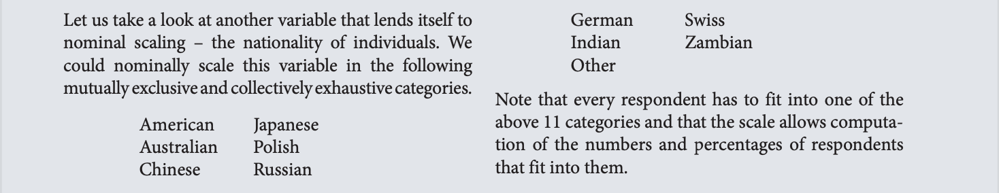
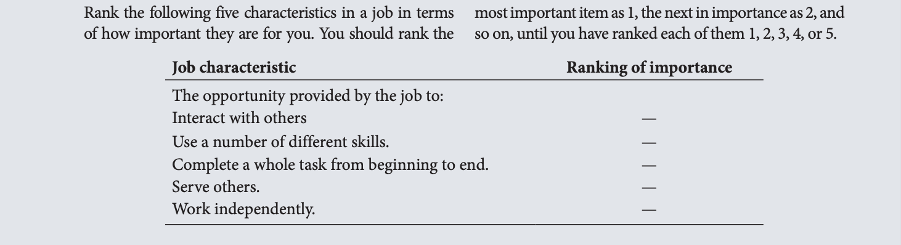
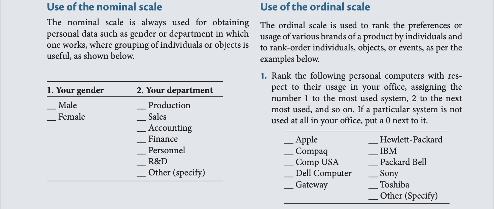
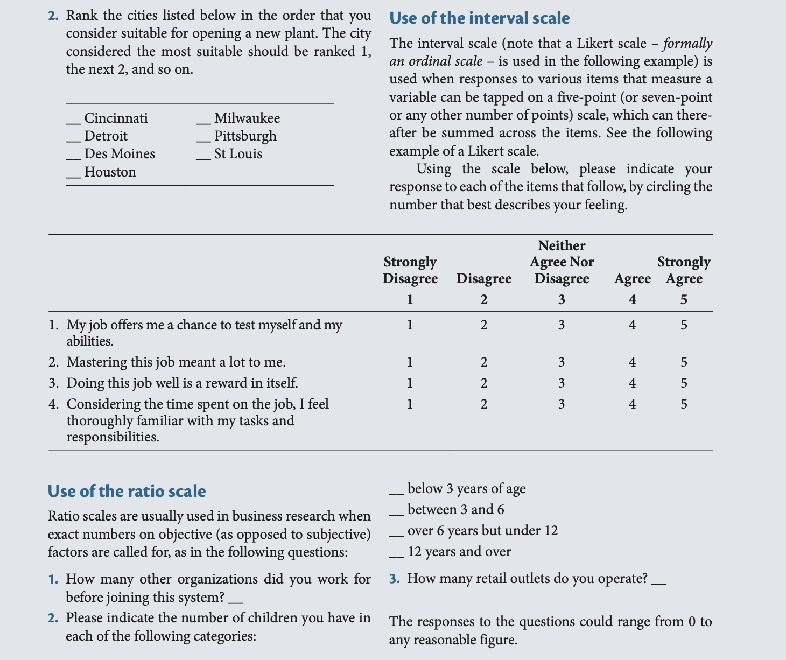
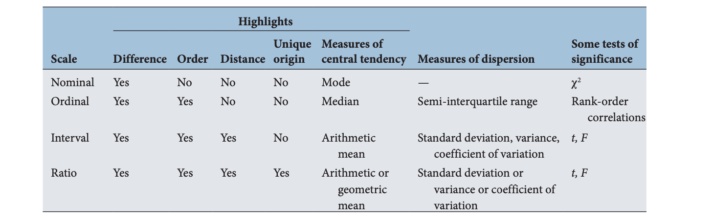
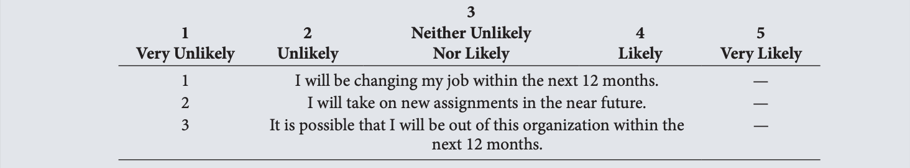
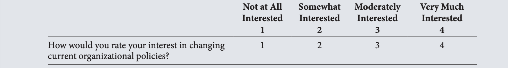
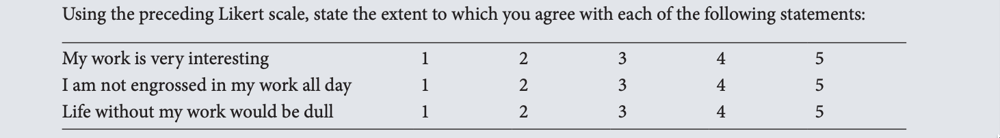
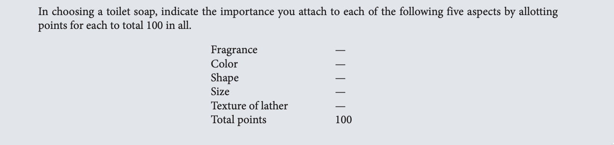
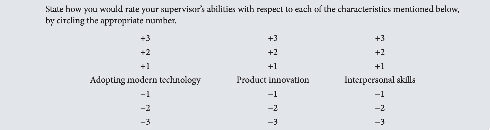

7 Measurement: Scaling, reliability and validity
7.1 Measurement of variables: Operational definition
Measurement of the variables is an integral part of research and an important aspect of research design. Unless the variables are measured in some way, we will not be able to find answers to our research questions. Surveys and experimental designs often use questionnaires to measure the variables of interest.
7.2 Operational definition (operationalisation)
Despite the lack of physical measuring devices to measure the more nebulous variables, there are ways of tapping these types of variable. One technique is to reduce these abstract notions or concepts to observable behavior and/or characteristics. In other words, the abstract notions are broken down into observable behavior or characteristics. For instance, the concept of thirst is abstract; we cannot see it. However, we would expect a thirsty person to drink plenty of fluids. In other words, the expected reaction of people to thirst is to drink fluids. If several people say they are thirsty, then we may determine the thirst levels of each of these individuals by the measure of the quantity of fluids that they drink to quench their thirst. We will thus be able to measure their levels of thirst, even though the concept of thirst itself is abstract and nebulous. Reduction of abstract concepts to render them measurable in a tangible way is called operationalizing the concepts.
7.3 Four types of scales
Measurement means gathering data in the form of numbers. To be able to assign numbers to attributes of objects we need a scale. A scale is a tool or mechanism by which individuals are distinguished as to how they differ from one another on the variables of interest to our study. Scaling involves the creation of a continuum on which our objects are located.
Suppose that we want to measure consumer attitudes toward soft drink consumption. After we have developed one or more scale items or questions, the next step in measurement is to decide on a scale that allows us to assign numbers to the attribute (attitude toward soft drink consumption) of our objects (consumers). This allows us to subsequently classify our objects (consumers) in terms of how unfavorable or favorable they are toward drinking a soft drink. One of the many options we have to classify consumers is a Likert scale. The Likert scale is a scale designed to examine how strongly respondents agree with a statement (such as “I enjoy having a soft drink”) on a five-point scale with the following anchors: 1 = Strongly Disagree, 2 = Disagree, 3 = Neither Agree Nor Disagree, 4 = Agree, 5 = Strongly Agree. Hence, the Likert scale allows us to distinguish consumers in terms of how they differ from one another in their attitude toward soft drinks, each respondent being assigned a number indicating a more or less unfavorable, neutral, or more or less favorable.
The million dollar question is: What is the meaning of the numbers 1, 2, 3, 4, and 5? Does the scale that we have used allow us for instance to rank our objects (2 is more than 1)? Does it allow us to compare differences between objects (in other words is the difference between 1 and 2 the same as the difference between 2 and 3? And does it allow us to calculate certain statistics such as a mean (or average) and a standard deviation? The answer is: it depends. It depends on the type of scale (that is, the basic scale type) that we have used.
There are four basic types of scales: nominal, ordinal, interval, and ratio. The degree of sophistication to which the scales are fine-tuned increases progressively as we move from the nominal to the ratio scale. That is why information on the variables can be obtained in greater detail when we employ an interval or a ratio scale rather than using the other two scales. As the calibration or fine-tuning of the scale increases in sophistication, so does the power of the scale. With more powerful scales, increasingly sophisticated data analyses can be performed, which, in turn, means that more meaningful answers can be found to our research questions. However, certain variables lend themselves with greater ease to more powerful scaling than others. Let us now examine each of these four scales.
7.3.1 Nominal scale
A nominal scale is one that allows the researcher to assign subjects to certain categories or groups. For example, with respect to the variable of gender, respondents can be grouped into two categories – male and female. These two groups can be assigned code numbers 1 and 2. These numbers serve as simple and convenient category labels with no intrinsic value, other than to assign respondents to one of two non-overlapping, or mutually exclusive, categories. Note that the categories are also collectively exhaustive. In other words, there is no third category into which respondents would normally fall. Thus, nominal scales categorize individuals or objects into mutually exclusive and collectively exhaustive groups. The information that can be generated from nominal scaling is the calculation of the percentage (or frequency) of males and females in our sample of respondents. For example, if
we had interviewed 200 people, and assigned code number 1 to all male respondents and number 2 to all female respondents, then computer analysis of the data at the end of the survey may show that 98 of the respondents are men and 102 are women. This frequency distribution tells us that 49% of the survey’s respondents are men and 51% women. Other than this marginal information, such scaling tells us nothing more about the two groups. Thus, the nominal scale gives some basic, categorical, gross information.

7.3.2 Ordinal scale
An ordinal scale not only categorizes the variables in such a way as to denote differences among the various categories, it also rank-orders the categories in some meaningful way. With any variable for which the categories are to be ordered according to some preference, the ordinal scale would be used. The preference would be ranked (e.g., from best to worst; first to last) and numbered 1, 2, and so on. For example, respondents might be asked to indicate their preferences by ranking the importance they attach to five distinct characteristics in a job that the researcher might be interested in studying. Such a question might take the form shown in the following example.
The ordinal scale helps the researcher to determine the percentage of respondents who consider interaction with others as most important, those who consider using a number of different skills as most important, and so on. Such knowledge might help in designing jobs that are seen as most enriched by the majority of the employees.
We can now see that the ordinal scale provides more information than the nominal scale. The ordinal scale goes beyond differentiating the categories to providing information on how respondents distinguish them by rank-ordering them. Note, however, that the ordinal scale does not give any indication of the magnitude of the differences among the ranks. For instance, in the job characteristics example, the first-ranked job characteristic might be only marginally preferred over the second-ranked characteristic, whereas the characteristic that is ranked third might be preferred in a much larger degree than the one ranked fourth. Thus, in ordinal scaling, even though differences in the ranking of objects, persons, or events investigated are clearly known, we do not know their magnitude. This deficiency is overcome by interval scaling, which is discussed next.

7.3.3 Interval scale
In an interval scale, or equal interval scale, numerically equal distances on the scale represent equal values in the characteristics being measured. Whereas the nominal scale allows us only to qualitatively distinguish groups by categorizing them into mutually exclusive and collectively exhaustive sets, and the ordinal scale to rank-order the preferences, the interval scale allows us to compare differences between objects. The difference between any two values on the scale is identical to the difference between any other two neighboring values of the scale. The clinical thermometer is a good example of an interval-scaled instrument; it has an arbitrary origin and the magnitude of the difference between 98.6 degrees (supposed to be the normal body temperature) and 99.6 degrees is the same as the magnitude of the difference between 104 and 105 degrees. Note, however, that one may not be seriously concerned if one’s temperature rises from 98.6 to 99.6, but one is likely to be so when the temperature goes up from 104 to 105 degrees!
The interval scale, then, taps the differences, the order, and the equality of the magnitude of the differences in the variable. As such, it is a more powerful scale than the nominal and ordinal scales, and has for its measure of cen- tral tendency the arithmetic mean. Its measures of dispersion are the range, the standard deviation, and the variance.
7.3.4 Ratio scale
The ratio scale overcomes the disadvantage of the arbitrary origin point of the interval scale, in that it has an absolute (in contrast to an arbitrary) zero point, which is a meaningful measurement point. Thus, the ratio scale not only measures the magnitude of the differences between points on the scale but also taps the proportions in the differences. It is the most powerful of the four scales because it has a unique zero origin (not an arbitrary origin) and subsumes all the properties of the other three scales. The weighing balance is a good example of a ratio scale. It has an absolute (and not arbitrary) zero origin calibrated on it, which allows us to calculate the ratio of the weights of two individuals. For instance, a person weighing 250 pounds is twice as heavy as one who weighs 125 pounds. Note that multiplying or dividing both of these numbers (250 and 125) by any given number will preserve the ratio of 2:1. The measure of central tendency of the ratio scale may be either the arithmetic or the geometric mean and the measure of dispersion may be either the standard deviation, or variance, or the coefficient of variation. Some examples of ratio scales are those pertaining to actual age, income, and the number of organizations individuals have worked for.
7.3.5 Examples and comparisons

  ## Rating scales
The following rating scales are often used in business research: * Dichotomous scale * Category scale * Semantic differential scale * Numerical scale * Itemized rating scale * Likert scale * Fixed or constant sum rating scale * Stapel scale * Graphic rating scale * Consensus scale
Other scales, such as the Thurstone Equal Appearing Interval Scale, and the multidimensional scale, are less frequently used. We will briefly describe each of the above attitudinal scales.
7.3.6 Dichotomous scale
The dichotomous scale is used to elicit a Yes or No answer, as in the example below. Note that a nominal scale is used to elicit the response.
7.3.7 Category scale
The category scale uses multiple items to elicit a single response, as per the following example. This also uses the nominal scale.
7.3.8 Semantic differential scale
Several bipolar attributes are identified at the extremes of the scale, and respondents are asked to indicate their attitudes, on what may be called a semantic space, toward a particular individual, object, or event on each of the attributes. The bipolar adjectives used might employ such terms as Good–Bad; Strong–Weak; Hot–Cold. The semantic differential scale is used to assess respondents’ attitudes toward a particular brand, advertisement, object, or individual. The responses can be plotted to obtain a good idea of their perceptions. A semantic differential scale is ordinal in nature. However, it is often treated as an interval scale. An example of the semantic differential scale follows.
7.3.9 Numerical scale
The numerical scale is similar to the semantic differential scale, with the difference that numbers on a five-point or seven-point scale are provided, with bipolar adjectives at both ends, as illustrated below. This scale is also often treated as an interval scale, although it is formally ordinal in nature.
7.3.10 Itemized rating scale
A five-point or seven-point scale with anchors, as needed, is provided for each item and the respondent states the appropriate number on the side of each item, or circles the relevant number against each item, as per the examples that follow. The responses to the items are then summed. This uses an interval scale.

Note that, the above is a balanced rating scale with a neutral point.
 The itemized rating scale provides the flexibility to use as many points in the scale as considered necessary (4, 5, 7, 9, or whatever), and it is also possible to use different anchors (e.g., Very Unimportant to Very Important; Extremely Low to Extremely High). When a neutral point is provided, it is a balanced rating scale, and when it is not, it is an unbalanced rating scale.
Research indicates that a five-point scale is just as good as any, and that an increase from five to seven or nine points on a rating scale does not improve the reliability of the ratings (Elmore & Beggs, 1975).
7.3.11 Likert scale
The Likert scale is designed to examine how strongly subjects agree or disagree with statements on a five-point scale with the following anchors:
The responses over a number of items tapping a particular concept or variable can be analyzed item by item, but it is also possible to calculate a total or summated score for each respondent by summing across items. The summated approach is widely used, and therefore the Likert scale is also referred to as a summated scale.
In the following example, the scores on the second item have to be reversed before calculating the summated score, because a high score on this item reflects an unfavorable attitude to work, whereas a high score on items 1 and 3 reflects a favorable attitude to work. This will lead to high total scores for respondents who have a favorable attitude toward work and to low total scores for respondents who have an unfavorable attitude toward work.
 ### Fixed or constant sum scale
The respondents are here asked to distribute a given number of points across various items as per the example below. This is more in the nature of an ordinal scale.

7.3.12 Stapel scale
This scale simultaneously measures both the direction and intensity of the attitude toward the items under study. The characteristic of interest to the study is placed at the center with a numerical scale ranging, say, from \(+3\) to \(−3\), on either side of the item, as illustrated in the example below. This gives an idea of how close or distant the individual response to the stimulus is. Since this does not have an absolute zero point, this is an interval scale.
 ### Graphic rating scale
A graphical representation helps the respondents to indicate on this scale their answers to a particular question by placing a mark at the appropriate point on the line, as in the following example. This is an ordinal scale, though the following example might make it look like an interval scale.
### Consensus scale Scales can also be developed by consensus, where a panel of judges selects certain items, which in its view meas- ure the relevant concept. The items are chosen particularly based on their pertinence or relevance to the concept. Such a consensus scale is developed after the selected items have been examined and tested for their validity and reliability. One such consensus scale is the Thurstone Equal Appearing Interval Scale, where a concept is measured by a complex process followed by a panel of judges. Using a pile of cards containing several descriptions of the concept, a panel of judges offers inputs to indicate how close or not the statements are to the concept under study. The scale is then developed based on the consensus reached. However, this scale is rarely used for measuring organizational concepts because of the time necessary to develop it.
7.3.13 Other scales
There are also some advanced scaling methods such as multidimensional scaling, where objects, people, or both, are visually scaled, and a conjoint analysis is performed. This provides a visual image of the relationships in space among the dimensions of a construct.
It should be noted that the Likert or some form of numerical scale is the one most frequently used to measure attitudes and behaviors in business research.